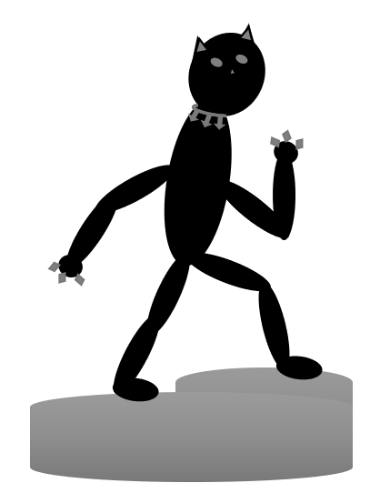

This movie is set in Marvel's own Wakanda, Africa. It is a highly advanced society that is protected and ruled by one king. T'Challa, portrayed by the late Chadwick Boseman, takes the place of King after his father, T'Chaka, passes away. Conflict arises as T'Challa must fight to keep his rights as king, and to protect his people from being attacked. One of Wakanda's most valuable resources is a metallic material known as Vibranium. It is able to absorb sound waves, vibrations, as well as kinetic energy. It is the main resource that powers Wakanda and fuels their technology.
I Am Your King Now!
The antagonists of the story seek to steal the Vibranium and sell it. T'Challa eventually partners with Agent Phil, a member of S.H.I.E.L.D. To be the Black Panther is simply not just a title of being king, it is a symbol of power and leadership. The Black Panther's powers are acquired via consuming a heart-shaped herb which grants the consumer great strength, stamina, and agility. The process follows several rituals, including that the individual being the Black Panther will enter another dimension to walk with their ancestors. T'Challa goes through the rituals several times throughout the film, each one showing how physically and mentally exhausting the process is.
This movie was the highest grossing marvel movie until Avengers: Endgame came out. Endgame, which was the final movie in the Avengers series, beat out Black Panther by about 158 million. Although that seems like a lot considering that Black Panth made about 700 million, 158 is only about a 25% increase. Which is good but not crazy.
